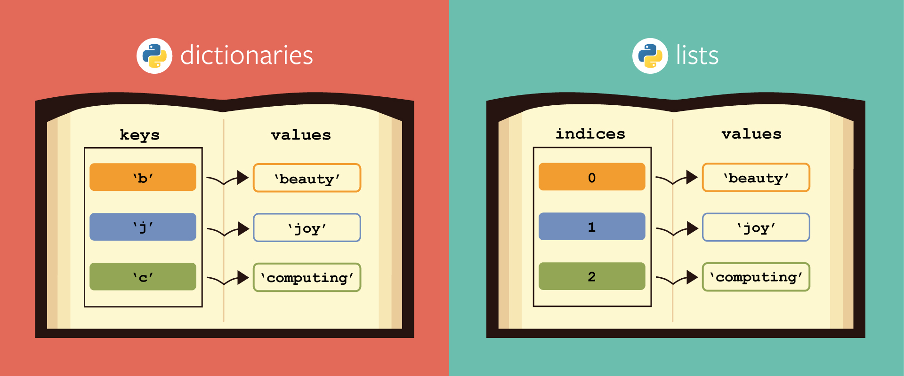

最有层次感的数据类型，特别干净整洁。在写爬虫时，我们最希望遇到的数据类型就是ta
下图就是最简单的字典的样式，键值对 key-value-pairs

字典
字典是有key，有value的 key-value-pair类型数据（键-值对）
| id | 姓名 | 年龄 | 性别 | 爱好 |
|---|---|---|---|---|
| 1 | David | 25 | Male | Basketball, Pingpang, Hiking |
| 2 | Mary | 23 | Female | Reading, Movies |
| 3 | Henry | 23 | Male | Diving, Hiking |
将上面的员工信息以关键词name、age、hobbies 组织成字典数据
空字典
david = dict()
print(david)
{}
填充
david['age'] = 23
print(david)
{'age': 23}
david['hobbies'] = ['Basketball', 'Pingpang', 'Hiking']
print(david)
{'age': 23, 'hobbies': ['Basketball', 'Pingpang', 'Hiking']}
david['gender'] = 'Male'
print(david)
{'age': 23, 'hobbies': ['Basketball', 'Pingpang', 'Hiking'], 'gender': 'Male'}
更新
david['age'] = 25
print(david)
{'age': 25, 'hobbies': ['Basketball', 'Pingpang', 'Hiking'], 'gender': 'Male'}
完整的信息
infos = {'David':{'age':25,
'gender':'Male',
'hobbies':['Basketball', 'Pingpang', 'Hiking']},
'Mary':{'age':23,
'gender': 'Female',
'hobbies': ['Reading', 'Movies']},
'Henry':{'age':23,
'gender': 'Male',
'hobbies': ['Diving', 'Hiking']}
}
print(infos)
{'David': {'age': 25, 'gender': 'Male', 'hobbies': ['Basketball', 'Pingpang', 'Hiking']}, 'Mary': {'age': 23, 'gender': 'Female', 'hobbies': ['Reading', 'Movies']}, 'Henry': {'age': 23, 'gender': 'Male', 'hobbies': ['Diving', 'Hiking']}}
字典的方法
| 方法 | 效果 |
|---|---|
| dictdata.items() | 返回dictdata所有item |
| dictdata.keys() | 返回dictdata的所有关键词 |
| dictdata.values() | 返回dictdata的所有值 |
dictdata.get(keystr) |
获取关键词keystr对应的值 |
dictdata[keystr] |
获取关键词keystr对应的值 |
infos.items()
dict_items([('David', {'age': 25, 'gender': 'Male', 'hobbies': ['Basketball', 'Pingpang', 'Hiking']}), ('Mary', {'age': 23, 'gender': 'Female', 'hobbies': ['Reading', 'Movies']}), ('Henry', {'age': 23, 'gender': 'Male', 'hobbies': ['Diving', 'Hiking']})])
#把infos.items()转化为列表
list(infos.items())[0]
('David',
{'age': 25,
'gender': 'Male',
'hobbies': ['Basketball', 'Pingpang', 'Hiking']})
infos.keys()
dict_keys(['David', 'Mary', 'Henry'])
infos.values()
dict_values([{'age': 25, 'gender': 'Male', 'hobbies': ['Basketball', 'Pingpang', 'Hiking']}, {'age': 23, 'gender': 'Female', 'hobbies': ['Reading', 'Movies']}, {'age': 23, 'gender': 'Male', 'hobbies': ['Diving', 'Hiking']}])
print(infos['David'])
print(infos.get('David'))
{'age': 25, 'gender': 'Male', 'hobbies': ['Basketball', 'Pingpang', 'Hiking']}
{'age': 25, 'gender': 'Male', 'hobbies': ['Basketball', 'Pingpang', 'Hiking']}
注意： 两种功能等同，但是get获取方法更加安全稳定。
例如
print(infos['Will'])
---------------------------------------------------------------------------
KeyError Traceback (most recent call last)
<ipython-input-16-f7c283c8ad8e> in <module>
----> 1 print(infos['Will'])
KeyError: 'Will'
print(infos.get('Will'))
None